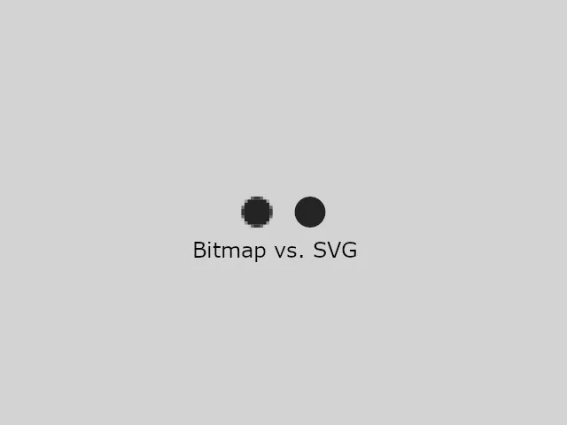

SVG (Scalable Vector Graphics) е XML базиран формат за описване на векторни графики. Съдържа много различни елементи за дефиниране на формите, които желаем за нашето изображение, и ефекти, които да добавим към тези форми. За създаване на SVG изображения може да се използват редактори за векторни графики като Illustrator, Inkscape. SVG е уеб стандарт, който се препоръчва от W3C. Може да се интегрира с други W3C стандарти като DOM и XSL.
Първата версия на технологията e първоначално предложена през 1999г. Последната версия на пълната спецификация е SVG 1.1 от 2011 година. SVG 1.1 е вече широко поддържан от всички основни браузъри и устройства и е признат като HTML5 стандарт. Единствените браузъри, които не го поддържат са версии на Internet Explorer и някои стари версии на Android. SVG 2.0 е още в етап на разработка и приемане, тъй като още не се поддържа от браузърите.
Векторна и Растерна графика в уеб
Растерни изображения - дефинират се с помощта на мрежа от пиксели. Файлът с растерни изображения съдържа информация, показваща къде точно трябва да бъде поставен всеки пиксел и какъв точно цвят да бъде. Популярни растерни формати в уеб са: Bitmap (.bmp), PNG (.png), JPEG (.jpg) и GIF (.gif).
Векторни изображения - дефинират се с помощта на алгоритми. Файлът с векторни изображения съдържа дефиниции на форми и път, които компютърът може да използва, за да разбере как трябва да изглежда изображението когато се изобразява на екрана. Форматът SVG ни позволява да създаваме мощни векторни графики за използване в уеб мрежата.
[1]
Ще изброим някои плюсове на използването на SVG. [2]
Резолюция
Най-голямото предимство на SVG e независимостта на резолюцията. Тъй като SVG файловете са векторна графика, може да променим размера им без да загубим качеството на изображението. Това е много полезно когато създаваме 'responsive' сайтове, които трябва да изглеждат добре и да работят в широк спектър от екранни размерности и устройва.
Като цяло SVGs имат по-гладък и отчетлив външен вид спрямо изображенията от други формати, независимо от размера. SVG изображенията могат да се принтират с високо качество на всяка резолюция.
На фигура1 може да се види разликата в качеството на изображението при двата дадени формата.

Фигура 1. SVG и Bitmap
Размерът на файла. Скорост
За да се използват растерни изображения в 'responsive' уеб сайтове, трябва да се предоставят в най-големия размер, в който ще бъдат изобразени, тъй като при увеличаването им ще загубим качеството. В резултат се получават изображения, които са много по-големи от размера, при който се гледат, принуждавайки така браузърът да изтегли големи файлове. Колкото по-голям е размерът на файла толкова по-бавно се зареждат.
За разлика от тях, векторната графика е мащабируема, така че може да използваме много малки по размери файлове, независимо от това колко големи тези изображения ще се наложи да се показват. Това оптимизира цялостното представяне (производителността) на сайта и скоростта на теглене.
При форматите като PNG, изображенията трябва да се посочат като външни източници, което води до увеличаване на HTTP заявките и понижаване на скоростта на сайта. SVGs са не само малки по размер файлове, но могат да бъдат вградени в HTML, намалявайки заявките и увеличавайки скоростта на сайта.
Прилагане на CSS стилове. Анимация
Можем лесно да добавим SVG директно в HTML страницата като вграден (inline) SVG. Предимството на това използване е, че няма да има нужда от HTTP заявка, която да извлече файла с изображението, тъй като графиките се рисуват от браузъра.
Също така ще може да приложим стилове върху SVG изображението с CSS , а не да променяме неща с графичен редактор. Както и ще можем да добавим анимации - трансформации, преходи, върху SVG елемента с CSS. Има случаи, при които не може да се използва CSS за анимирането на SVGs, но тези случаи могат да бъдат покрити с JS - има JavaScript SVG библиотека (snap.svg).
Работа с DOM
SVGs имат DOM (Document Object Model), тоест могат да използват методите на JS DOM, така че е лесно да се манипулират и анимират елементите. За да преместим елемент просто трябва да променим координатите му.
SVG изображенията могат да се създават и редактират с всякакъв текстов редактор.
SVG изображенията могат да се търсят, индексират, скриптират и компресират.
За какво се използва SVG
SVGs не могат да заменят всички формати. Снимки, които изискват богати цветове трябва да са в JPG или PNG формат. Прости изображения като икони, лога, графики, скици, диаграми са подходящи да бъдат направени с SVG, тъй като се възползват от мащабируемостта и възможността за стилизиране с CSS. Може също така да създаваме визуални ефекти - преобразуване на формата, минаване от една форма в друга. SVG e подходящ за сложни интерфейси, които могат да бъдат интегрирани с уеб базирани приложения и богати интернет приложения, тъй като са леки, лесни за анимиране и всеки елемент може да улови потребителското взаимодействие. [3]
На фигура2 логото е направено с SVG елементи.
Фигура 2. SVG лого
Как да добавим SVG в уеб страница
Ще покажем няколко начина за вграждането на SVG в уеб страница. Някои от тях имат предимства, които могат да бъдат полезни в зависимост от това какво искате да постигнете, а някои не са препоръчителни за използване. [4], [5]
1. SVG вграден в HTML5 страницата
Един SVG елемент може да бъде добавен директно като код в рамките на HTML5 страницата, използвайки<svg>тагa. Този метод работи във всички HTML5 браузъри и позволява използването на анимации, скриптове и CSS стилове. Подходящ за вмъкване на прости изображения или ако построяваме изображението, използвайки JavaScript, но иначе е по-добре да са в отделен файл, тъй като увеличава размера на HTML файла и ако искаме да използваме изображението на няколко места ще имаме повтаряне на код, което не е добре за поддръжката.
<object>е един добър вариант за използване, ако искате да използвате SVG без да го слагате директно (вградено) в HTML файла.
<object type="image/svg+xml" data="image.svg"> Your browser does not support SVGs </object>
Код 2. SVG в <object> таг
3. Използване на <img> таг
SVGs могат да бъдат добавяни в уеб страницата като всяко друго изображение. Ако запазим SVG като файл - image.svg, може директно да се ползва в<img>тага. Не е най-използваният метод, тъй като от съображения за сигурност, браузърите ще деактивират SVG, скриптове, линкове и други типове интерактивности когато те са добавен в уеб страницата чрез<img>таг. Също така IE9, Chrome и Safari няма да приложат дефинираните стилове за SVG, ако те са дефинирани в отделен CSS файл, което ни ограничава.
SVGs могат да бъдат използвани като CSS background за всеки елемент. Както при<img>тага, SVG, скриптове, линкове и други типове интерактивности ще бъдат деактивирани когато използвате този метод. Предимствата на SVG, като яснота на всеки размер, се запазват с този метод.
С background-size свойството може да си подсигурим, че изображението ще се събере и няма да се отреже като зададем размера на изображението.
#myelement { background-image: url(image.svg); }
Код 4. SVG като background-image
5. Използване на <embed> таг
<embed>е предназначен да се използва за интегриране на „външно приложение“ или „интерактивно съдържание“. Въпреки че е подобен на<object>,<embed>не се използва за HTML спецификация. Поддържа се от повечето браузъри и често се използва за внедряването на Flash плъгини. Въпреки че може да се използва за SVG, не е препоръчително.
<embed type="image/svg+xml" src="image.svg"/>
Код 5. SVG в <embed> таг
6. В рамките на <iframe>
Тъй като браузърите могат да изобразяват SVG документи сами по себе си, можете да заредите изображения в рамките на<iframe>. Не лош метод, ако искате напълно да отделите SVG кода и скрипта от главната си страница. Манипулирането на SVG изображението обаче ще стане малко по-трудно. Не е много предпочитан метод.
<iframe src="image.svg"> Your browser does not support iframes </iframe>
Код 6. SVG в <iframe> таг
Заключение
За най-много функционалности използвайте<object>. Като алтернатива може да ползвате вградения метод с<svg>тага, за да спестите HTTP заявка, но имайте предвид, че няма да бъде кеширано. Ако просто искате да използвате SVGs като всяко друго изображение - статично, използвайте <img>илиbackground-image. Можете да използвате <iframe>и<embed>, но не са най-добрите възможности и не се много предпочитат.
В Таблица1 може да видите какво позволяват различните начини за вграждане на SVG.
Object
Inline
Img
Background-image
CSS манипулации
Да
Да
Вграден*
Вграден*
JS манипулации
Да
Да
Не
Не
SVG анимации
Да
Да
Да
Да
Интерактивни SVG анимации
Да
Да
Не
Не
Таблица 1. Възможности в зависимост от използването
* - Вграден значи, че нещата работят, но само ако CSS <style> е вграден в рамките на SVG кода.
Примерни SVG фигури
SVGs се дефинират, използвайки eXtensible Markup Language ( XML ), който използва тагове като HTML, но е по-стриктен. Например, не трябва да забравяме затварящ таг.
SVG има някои предварително дефинирани форми, които могат да бъдат използвани. [6]
Кръг
<cirlcle>елементът се използва за създаването на кръг. Атрибутите cx и cy дефинират x и y кординатите на центъра на кръга. Ако се пропуснат, центърът на кръга ще е (0,0). Атрибутът r дефинира радиуса на кръга.
<rect>елементът се използва за създаването на правоъгълник и негови вариации. Атрибутите width и height дефинират височината и широчината на правоъгълника.
Можем да заоблим върховете на правоъгълника като дефинираме rx и ry атрибутите като съответно задаваме колко заоблени да се получат.
CSS свойството fill дефинира цвета на запълването на елемента, а stroke дефинира цвета на рамката му като със свойството stroke-width се дефинира дебелината ѝ. С fill-opacity се променя прозрачността на запълващия фигурата цвят - приема стойности от 0 до 1, а с stroke-opacity се променя на рамката.
Може да се дефинира прозрачността на целия елемент с opacity свойството.
<ellipse>елементът се използва за създаването на елипса. Разликата между елипса и кръг е, че тук имаме два радиуса за x и y, които се различават един от друг. С cx атрибута дефинираме х координатата на центъра на елипсата, а с cy се дефинира у координатата. С rx дефинираме хоризонталния радиус, а с ry дефинираме вертикалния.
<line>елементът се използва за създаването на линия.
С x1 дефинираме началото на линията по оста х, а с y1 по оста y. С x2 атрибута дефинираме края на линията по оста х, а с y2 по оста y.
<polygon>елементът се използва за създаването на графика, която да съдържа поне три страни - използват се прави линии и формата е затворена.
Атрибутът points дефинира х и у координатите на всеки връх.
<polyline>елементът се използва за създаването на всякакви форми, съставени единствено от прави линии, които са свързани в няколко точки.
Атрибутът points дефинира лист от точки - двойки от х и у координати, необходими за нарисуването на начупената линия.
<path>елементът се използва за дефиниране на "път". Може да се използва за създаването на линии, криви, дъги и др, както и да се използва с текст за създаването на текст, който се движи заедно с "пътя". Следващите команди се използват за данните на пътя.
M = премести до
L = линия до
H = хоризонтална линия до
V = вертикална линия до
C = крива до
S = гладка крива до
Q = квадратична крива на Безие
T = гладка квадратична крива на Безие
A = елипсовидна дъга
Z = затваряне на пътя
Горните команди могат също така да се напишат с малки букви. Главните букви значат, че позиционирането е абсолютно. Малките букви означават, че позиционирането е относително.
Примера - дефинира се път, който започва от (210,20), рисува се линия до (160,110), оттам линия до (260,110) и накрая затваряне на пътя.
Могат да се правят много по сложни примери. Заради сложността на рисуването на пътища, се препоръчва да се използва SVG редактор за създаването на сложни графики.
По-сложен пример, използващ path, стилизиран с CSS свойства [7]
Текст
<text>елементът се използва за дефиниране на текст. Атрибутите x и y се използват за позициониране на текста. Може да оформим текста с различните font свойства на CSS. Може да завъртаме текста с rotate , използвайки transform .
<text>елементът може да се подреди в произволен брой подгрупи с<tspan>елемента и така да им приложим различен стил.
Освен споменатите досега основни форми, пътища и текст, SVG има и други характеристики: [6], [8]
Рисуване (Оцветяване) - запълване и очертаване - fill и stroke свойствата, използване на плътни цветове, градиенти, прозрачност и др.
SVG градиенти: Градиентът е плавен преход от един цвят към друг. Също така към един и същи елемент могат да бъдат приложени няколко цветови прехода. Има два основни типа градиенти в SVG:
Линеен градиент
<linearGradient>елементът се използва за дефинирането на линеен градиент. Този таг трябва да се постави в рамките на<defs>тага. <defs>елементът съдържа дефиниции на специални елементи като градиенти,филтри.
Линейните градиенти могат да бъдат дефинирани като хоризонтални, вертикални или ъглови градиенти - разликата идва от това какви стойности приемат х1, x2, у1 и у2 координатите.
id атрибутът задава уникално име на градиента. x1, x2, y1 и y2 атрибутите дефинират началната и крайната позиция на градиента.
Цветовата гама на градиента може да бъде съставена от два или повече цвята. Всеки цвят се специфицира с<stop>таг.
offset атрибутът се използва за определянето на това къде започва и завършва цветът на градиента.
fill атрибутът свързва графичния елемент с градиента, използвайки дефинираното id.
Изрязване, маскиране и композиране - използване на елементи за очертаване на региони, които могат да бъдат нарисувани, променяне на видимостта на части от елементите, премахване на сегменти от елементи.
Филтри - графични ефекти, които да се приложат на елементи, като замъгляване, осветление, настройки на цветове.
Всички SVG филтри се дефинират в<defs>елемента.
<filter>елементът се използва за дефиниране на SVG филтър. Има задължителен id атрибут, който го идентифицира. Така графичният елемент сочи към филтъра, който ползва, чрез това id.
SVG Blur ефект (Замъгляване)
<feGaussianBlur>елементът се използва за създаването на замъгляващ ефект.
С in="SourceGraphic" се определя, че ефектът се създава за целия елемент. stdDeviation атрибутът определя колко замъглен да стане обекта.
В <rect>елемента filter атрибутът свързва елемента с филтъра, чийто id е посочен.
анимирането на числовите атрибути на елемент (x, y, ...)
анимиране чрез трансформиращи атрибути - translate, rotate
анимиране на атрибутите за цветове
анимиране чрез движение по път
Това се постига чрез добавяне на<animate>елемента в елемента, който искаме да анимираме.
Ще дадем пример за последния вид анимация - проследяване на път.
Чрез<animateMotion>тага можем да анимираме позицията на елемента и да го въртим според зададения път в path атрибута.
Задавайки стойността на атрибута repeatCount на "indefinite", задаваме, че анимацията трябва да се изпълнява докато съществува SVG изображението. Атрибутът dur задава продължителността на анимацията.
Шрифтове - текстови глифове (форми на изображението на букви), дефинирани в SVG файл, могат да се използват като стандартен шрифт.
Метаданни - заглавия, описания, създатели и други свойства на SVG изображението.
Изпробване на SVG код
Конзола за изпробване на SVG код
Може да изпробвате някои елементи на SVG. Дадените фигури са примерни. Може да ги изтриете и да напишете свой код. С бутона Reset се връщате към началното състояне. [4]
[4] Jake Giltsoff, "SVG ON THE WEB - A Practical Guide", June 16 2015, https://svgontheweb.com, последно посетен на 31-10-2020
[5] Craig Buckler, "How to Add Scalable Vector Graphics (SVG) to Your Web Page", публикувано на: May 30 2012, https://www.sitepoint.com/add-svg-to-web-page, последно посетен на 28-11-2020